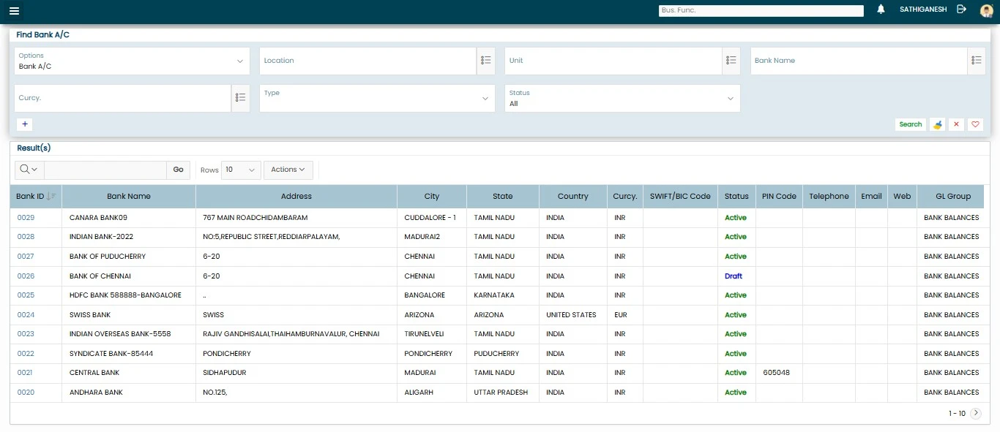
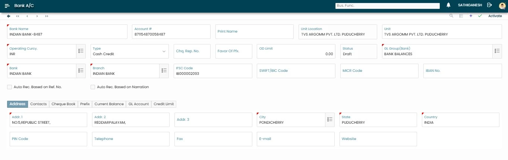
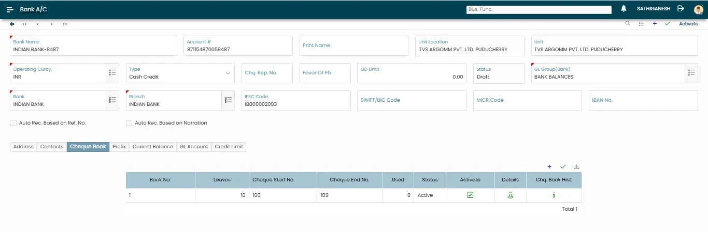
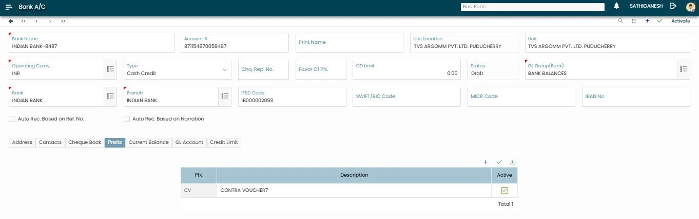
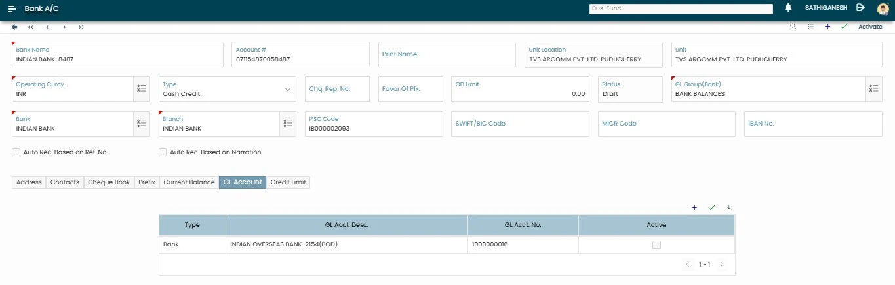

<div data-category="Financials" data-title="Bank A/C" data-updated="December 01, 2025" data-contributors="RoadmapIT" data-breadcrumb="Home,Financials,Bank A/C">
  <div class="page-content">
    <p>A bank account is a financial account with a banking institution, recording the financial transactions between the customer/Supplier and the bank.</p>
    <p>This screen is used to configure the bank accounts.</p>
    <p>The following types are available,</p>
    <ol>
      <li style="display: list-item; list-style-type: decimal">Current / Loan</li>
      <li style="display: list-item; list-style-type: decimal">Cash credit</li>
      <li style="display: list-item; list-style-type: decimal">Savings</li>
      <li style="display: list-item; list-style-type: decimal">Credit Card</li>
    </ol>
    <p>This screen is used to create the Bank master.</p>
    <h5>Navigation path:</h5>
    <p class="fs-6">Setup \ Bank A/C</p>
    
    <ul style="list-style-type: none; align-content: center">
      <li class="mouse-icon">Search screen displays the list of Bank A/c with the relevant details</li>
      <li class="mouse-icon">Click on search to filter all the records.</li>
      <li class="mouse-icon">User can filter the respective documents by entering the search parameters at the header.</li>
      <li class="mouse-icon">Using search, system displays the results relevant to the search parameters entered.</li>
      <li class="mouse-icon">On -click; the corresponding transaction record will be displayed.</li>
      <li class="mouse-icon">
        Using
        
        icon, entered search parameters can be cleared.
      </li>
      <li class="mouse-icon">
        To close the screen, use
        <i class="bi bi-x fs-4 mx-2 text-danger"></i>
        icon.
      </li>
      <li class="mouse-icon">
        By Clicking the
        <i class="bi bi-plus fs-4 mx-2 text-primary"></i>
        Add button we can create new Bank A/c
      </li>
    </ul>
    <h2>Address</h2>
    
    <ul style="list-style-type: none; align-content: center">
      <li class="mouse-icon">Enter/Select the Bank Name from LOV.</li>
      <li class="mouse-icon">Enter Account #</li>
      <li class="mouse-icon">Enter/Select the Unit from LOV.</li>
      <li class="mouse-icon">Enter the Bank Description.</li>
      <li class="mouse-icon">Enter/Select an operating currency from LOV.</li>
      <li class="mouse-icon">Choose/Entry a GL Group for bank account creation.</li>
      <li class="mouse-icon">Enter the Address</li>
      <li class="mouse-icon">Enter the Telephone No. if required</li>
      <li class="mouse-icon">Enter the Address2</li>
      <li class="mouse-icon">Enter the Fax1 , if required</li>
      <li class="mouse-icon">Enter the Address3</li>
      <li class="mouse-icon">Enter the City</li>
      <li class="mouse-icon">Enter the Email ID. if required</li>
      <li class="mouse-icon">Enter the Website. if required</li>
      <li class="mouse-icon">
        Click
        <i class="bi bi-check-lg fs-4 mx-2 text-success"></i>
        to save the entry.
      </li>
    </ul>
    <h2>Cheque Book</h2>
    
    <ul style="list-style-type: none; align-content: center">
      <li class="mouse-icon">Enter the Cheque Book No.</li>
      <li class="mouse-icon">Enter the No. of Leaves in the Cheque Book.</li>
      <li class="mouse-icon">Enter the Start No. of the Cheque Book.</li>
      <li class="mouse-icon">
        Click the
        <i class="bi bi-check-lg fs-4 mx-2 text-success"></i>
        Button to Activate the Cheque Book and the status will be changed from New to Active.
      </li>
    </ul>
    <h2>PREFIX</h2>
    
    <ul style="list-style-type: none; align-content: center">
      <li class="mouse-icon">
        Select the Prefix for the following documents;
        <ol>
          <li style="display: list-item; list-style-type: circle">Payment voucher</li>
          <li style="display: list-item; list-style-type: circle">Receipt voucher</li>
        </ol>
      </li>
      <li class="mouse-icon">
        Click the
        <i class="bi bi-check-lg fs-4 mx-2 text-success"></i>
        Button to save the Entry
      </li>
    </ul>
    <h2>GL Accounts</h2>
    
    <ul style="list-style-type: none; align-content: center">
      <li class="mouse-icon">Choose the GL account from LOV.</li>
      <li class="mouse-icon">Click Activate button to activate the Bank A/C.</li>
    </ul>
  </div>
</div>
